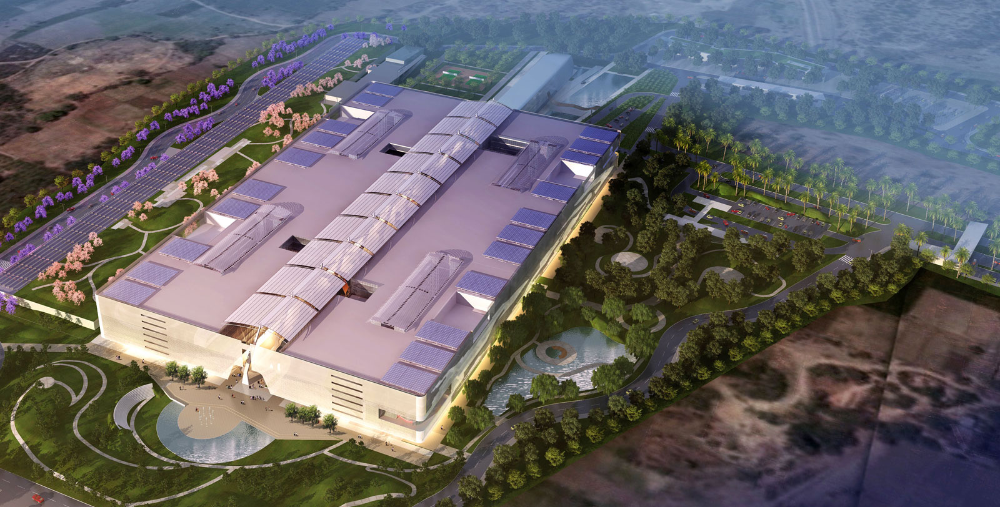

<div class="jumbotron">
<div class="row">
    <div class="col-sm-6 col-xs-12 text-justify font2em">
TCS adibatla is the  new Hub of IT market. In future TCS Adibatla is going to see  28000 + employees stepping into it. As it is located at a good distance from the city, Transportation plays an important role here. More than 50 buses are deployed to travel to TCS Adibatla.
Now You can get all the bus details i.e. landamrk, routes ,time from anywhere at your fingers. Now going to adibatla and coming from  adibatla office is not a matter of fear.
If you have used our service, you can send us your feedback. We take feedback very seriously and each mail is a source of learning. Feel free to send in your comments/suggestions either by mail or call us on numbers we have listed in the ‘contact us’ section.We look forward to many more journeys with each one of you. Adibatla office  is beautiful. Experience it by road.
</div>
<div class="col-sm-6 col-xs-12">
   <div class="col-sm-12">
       
   </div>
   
   <div class="col-sm-12">
   <video width="90%" height="240" controls>
  <source src="https://s3.ap-south-1.amazonaws.com/vmwvideos/video-1478002977.mp4" type="video/mp4">
Your browser does not support the video tag.
</video>
   </div>   
             
                
</div>
</div>
</div>
